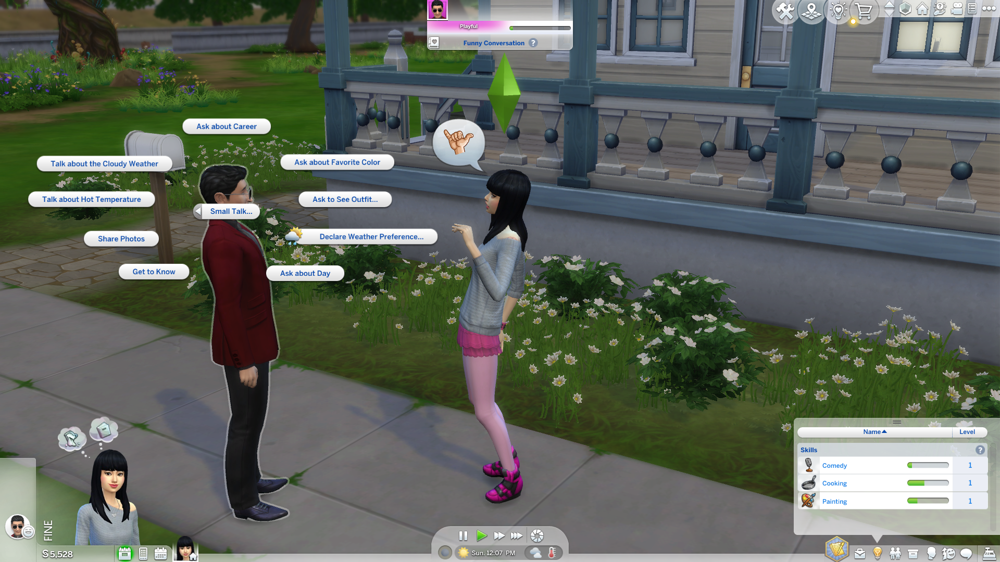

Game Summary
The Sims 4, released in 2014, is a life-simulation game that gives players the ultimate freedom to make characters, build homes, and manage relationships. The Sims 4 lets players create meaning through personalized challenges, ongoing progress, and evolving narratives, rather than being structured around victory and winning. The game truly lets players play the game their way, with no end goal embedded into the game.The Sims 4 is open-ended and lets players create characters called “Sims”, design building spaces, and control their Sims through everyday activities, careers, relationships, and life events. The game has no set storyline or ultimate objective but instead, includes a sandbox style of features like skill progression, career advancement, social interactions, aspiration milestones, and household management that all generate ongoing goals and challenges. Players build meaning through their own narratives, whether having an ideal world with their own builds, creating dramatic family storylines, simply creating sims and giving them their own style, or attempting themed challenges created by the community. These vast story possibilities, combined with progress systems and creative tools, make The Sims 4 a perfect example of gameplay structured around self-directed goals and continuous striving rather than the goal of winning with fixed endings. In The Sims 4, players can keep on building, creating Sims and stories through various save files, or continuing to play as the same family from generation to generation. There truly is no end to this game, and the player can expand the horizon with the additional DLCs that unlock more gameplay and items, making it an endless creative outlet. The Sims 4 is about the experience and engagement the player has playing.


Theory Connection
The Sims 4 connects to Nguyen’s concept theory of striving play by allowing players to pursue self-directed goals within the open-ended environment the game provides. Nguyen defines stiving play as gameplay in which “We take on ends for the sake of the means they force us through” (Nguyen 27). In The Sims 4, there is no ultimate victory, instead players set tasks and objectives for their Sims, whether they are advancing in careers, mastering skills, building homes, or pursuing relationships. This captures Nguyen’s idea that the value of striving play is in the process itself, not in completing a game-defined endpoint. The game’s player-driven structure allows players to focus on personal goals and stories they want to create, deciding how their narratives unfold, and continuing their objectives for as long as they want. This makes the process of playing ongoing, and the goals within it are temporary ends that shape the experience rather than aiming for a “win” or a game embedded ending. For example, in The Sims 4: Stories Official Gameplay Trailer, the story of two Sims, Ollie, a starving artist and Babs, a bartender, unfolds through a combination of gameplay and storyline choices. In the video, the narrator says, “Babs finished her novel, but her story with Ali is just beginning” (The Sims) showing the endless gameplay possibilities and opportunities that can emerge from this example's storyline.
The game’s features of skill progression, career advancement, relationship development, and household upgrades create rewards for players. Each time a Sim improves cooking, painting, logic, or other skills, the player sees progress, experiencing the satisfaction of developing the skills over time. The Sims 4 has achievements of reaching levels, promotions, and completing milestones that keep players striving forward. This aligns with Nguyen’s statement that in striving play, “in-game ends are taken up, temporarily and disposably, for the sake of sculpting the activity of their pursuit” (Nguyen 27). This means the enjoyment comes from the experiences of pursuing continuous tasks and not just simply completing them, as for some players the struggle and tedious tasks of gaining skills, advancing in a career path, and building relationships and homes, is part of the storyline they are creating.
The ability to progress in careers also gives players the feeling of striving, as they must complete tasks and maintain performance to move up the career ladder. The same applies to building relationships or upgrading a Sim’s home, because each improvement matters because it contributes to the player’s story. Players treat The Sims 4 as a narrative space, crafting stories for their Sims that emphasize the process rather than the outcome or “end” of the story. This is seen in The Sims 4 “Let’s Plays” and Generation Challenges on YouTube, where the focus is on unfolding gameplay and meeting the challenge goals or personal goals. The value comes from the storyline players build, not from “winning.” As Nguyen states that striving players, "take up disposable ends and temporarily care about winning for the sake of the ensuing activity” (Nguyen 28). In The Sims 4, there is no final victory, and the meaning of the play experience is shaped by the player and what they choose to pursue.


The Sims 4 also demonstrates Nguyen’s argument that striving play is a form of agency, especially through the aspirations, stories, and goals players choose for their Sims. Nguyen states that “in games, we are fluidly playing around with parts of our own agency” (Nguyen 51), meaning that players can try out different ways of acting, reasoning, and making decisions because they are taking on and submersing themselves in the in-game narrative. Players can create a wide range of Sim stories that show this fluidity in their agency. Whether pursuing material success, creative mastery, or family life, players generate personal goals and meaning through the act of striving in-game.
Character creation, building, storytelling, and moral decision-making further emphasize this connection to agency. Players shape their Sims’ environments, personalities, goals, and everyday choices, experimenting with different lifestyles and identities. Nguyen emphasizes that gameplay often involves “taking on an alternate practical agency and subsuming ourselves within it” (Nguyen 46). Players temporarily adopt the priorities of their Sims wanting them to succeed, improve, and grow even though these priorities are gone once the game is turned off. As Nguyen explains to be in the mental attitude of striving, “I need to immerse myself in this temporary agency” (Nguyen 46). This immersion is present to The Sims 4, where joy comes not only from achieving milestones but from the choices, experimentation, and ongoing striving that define the player’s experience in the temporary narrative.